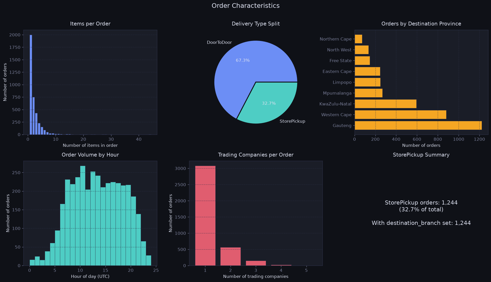
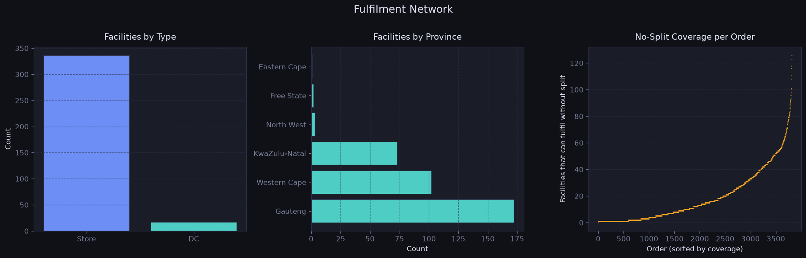
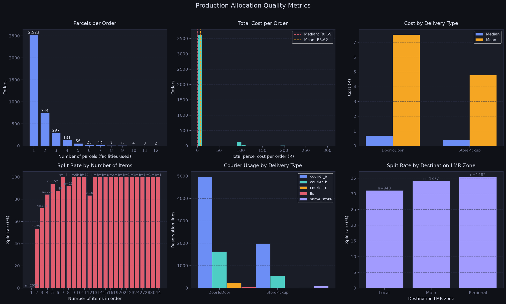
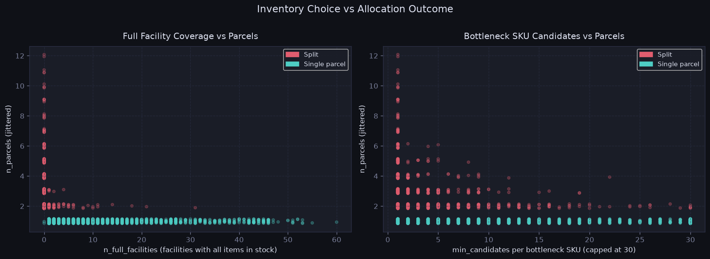
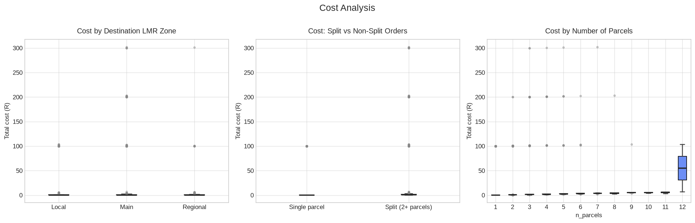
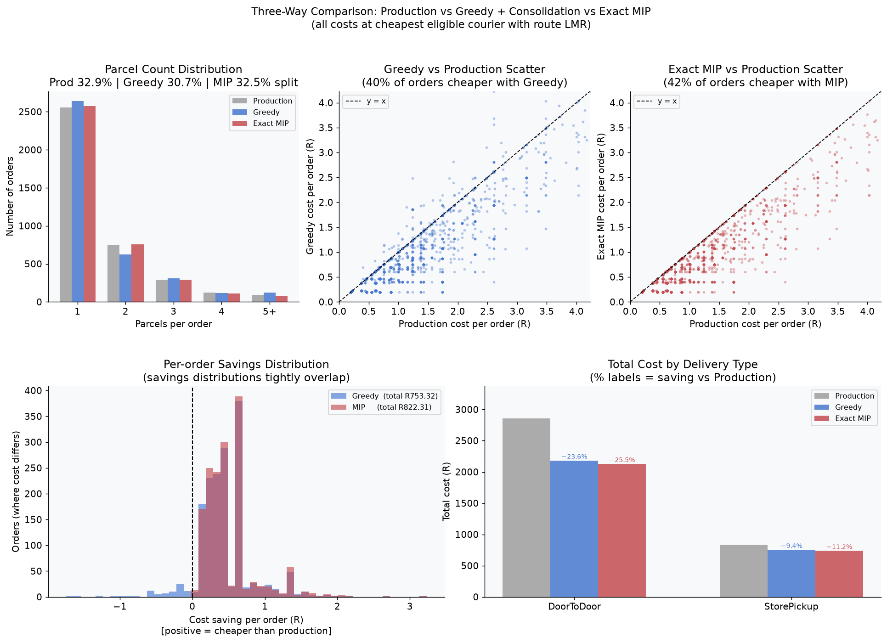
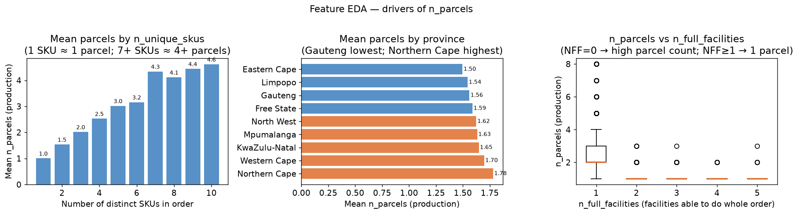
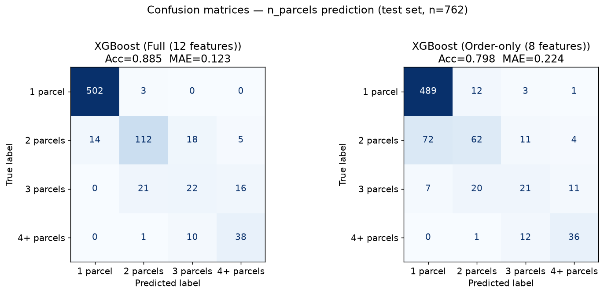

End-to-end analysis of a South African e-commerce fulfilment network. We explore the current allocation algorithm, build a cost-optimal replacement using integer programming, and train a predictive model to estimate parcel complexity (the number of parcels an order will require) at order arrival.
Before building any allocation model, we need a clear picture of three things: (1) What does the physical fulfilment network look like — facility types, geographic spread, courier rules? (2) What does the current production algorithm do — how often does it split orders, what does it cost, where does it fail? (3) Which structural properties of an order make splitting unavoidable versus avoidable?
The analysis covers the full dataset — no sampling — across all 3,810 orders and 104,777 inventory records.
The raw data is a single large CSV where each row is one order. Several columns contain nested JSON objects encoding the order details (items, quantities, delivery address), the inventory snapshot across all facilities, and the production plan. We unpack these into four flat DataFrames and cache them as Parquet files for all downstream steps. Parquet is a columnar binary format: it reads ~10× faster than CSV, preserves column types (no re-parsing), and handles the ~100k row inventory table in under 1 second.
| DataFrame | Key columns | Rows |
|---|---|---|
orders | order_id, delivery_type, destination_postal, province | 3,810 |
items | order_id, order_item_id, sku, alternative_sku, quantity, excluded_branches | 8,626 |
inventory | order_id, facility_id, sku, qty_available, is_active, courier_c_active | 104,777 |
reservations | order_id, facility_id, courier_id, lmr, cost | 9,474 |

Delivery type: 2,566 orders (67.3%) are DoorToDoor — items shipped to the customer's address. The remaining 1,244 (32.7%) are StorePickup, where the customer collects at a specific branch. StorePickup orders are structurally simpler: the destination facility is pre-determined, so the algorithm only needs to confirm that branch has stock.
Median = 1 item · Mean = 2.26 · Max = 44 (bulk/business order). The distribution is heavily right-skewed — most volume is simple single-item orders.
Mean = 1.57 parcels · median = 1. The 32.9% split rate is the primary cost driver — each extra parcel adds a full courier charge.

Of the 353 facilities with stock, 336 (95.2%) are Stores and 17 (4.8%) are Distribution Centres. DCs are underrepresented in count but carry more depth. A critical domain detail: each DC contains multiple virtual branches, one per trading company, each with its own branch code in inventory. However, all items picked from the same physical building share a loading dock and leave in one parcel.
This means: (1) stock must be summed across all virtual branches of the same DC and (2) parcel cost is counted once per physical DC. We use dc_branch_numbers.csv to group branches by their dc_type field. Correcting for this changes the split rate from a naive 33.8% down to the correct 32.9% — 142 orders that appeared to split were actually consolidated within the same DC.
The most important domain insight from the EDA: shipping cost depends on the route (origin postal × destination postal × courier's hub network), not just the facility. The three LMR levels:
| Zone | Rule | DoorToDoor (courier_a) | StorePickup (courier_a) |
|---|---|---|---|
| Local | Both postcodes are Local/Main in their closest hub, and that hub is the same for both collection and delivery | R0.46 | R0.22 |
| Main | Both postcodes are Local/Main in their hubs, but the collection hub ≠ delivery hub | R0.69 | R0.38 |
| Regional | Either postcode is classified as Regional in the courier's network (remote area) | R0.87 | R0.62 |
Production appears to classify LMR at the facility level (ignoring the customer's postcode), which means it frequently pays Main rates (R0.69) for routes that are actually Local (R0.46). This 33% unit-cost premium on a large fraction of orders is the dominant source of our Task 2 savings.

Spearman ρ = 0.806 (p < 0.001). The transition from 1 to 2 items is the steepest: split rate jumps from 0.3% to 53.5%, because finding one facility stocking two specific SKUs simultaneously is far harder than finding one stocking either alone. 98% of orders with 7+ items split — the rare exceptions are large single-SKU bulk orders fulfilled from one warehouse.
Every single one of the 732 orders (19.2%) containing items from 2+ trading companies splits — a 100% split rate. Single-brand orders split at only 18.0%. The mechanism is structural: different trading companies stock items at dedicated DC subsets. No single facility holds cross-brand inventory for the same order in this dataset.
courier_c has a sentinel cost of 10,000 for DoorToDoor Main/Regional and all StorePickup routes — effectively unavailable. It is used 234 times, always DoorToDoor Local at R0.20 — the cheapest rate in the entire cost table. This is a hard constraint, not a policy preference.
71.5% of DC reservations (1,670 of 2,337) occur when at least one Store also holds the SKU. The algorithm frequently prefers DCs over Stores — likely for depth-of-stock, lower pick-error rates, or upstream SKU–facility assignments. DCs are not a fallback; they are preferred for many SKUs.
Northern Cape: 41.1% · Limpopo: 37.0% · Western Cape: 33.9% · Gauteng: 30.9%. The 10pp gap between Gauteng and Northern Cape is driven by facility density — remote provinces have fewer nearby options so orders must ship cross-province, increasing both cost and complexity.
| Items in order | Orders | Split rate | Mean parcels |
|---|---|---|---|
| 1 | 2,000 | 0.3% | 1.00 |
| 2 | 751 | 53.5% | 1.54 |
| 3 | 431 | 71.9% | 2.00 |
| 4 | 229 | 84.3% | 2.53 |
| 5 | 152 | 94.1% | 3.03 |
| 6 | 89 | 87.6% | 3.10 |
| 7+ | 158 | 98.1% | 4.35–12 |
| Trading companies | Orders | Split rate | Mean parcels |
|---|---|---|---|
| 1 (single brand) | 3,078 | 18.0% | 1.25 |
| 2 brands | 561 | 100% | 2.67 |
| 3 brands | 147 | 100% | 4.35 |
| 4 brands | 23 | 100% | 6.61 |
The strongest predictor of whether an order will split is whether a single facility exists that holds sufficient stock for every SKU in the order simultaneously. We define n_full_facilities as the count of such facilities per order.

| n_full_facilities | Orders | Split rate | Interpretation |
|---|---|---|---|
| 0 — no single facility covers all items | 1,215 | 99.8% | Split is structurally unavoidable |
| 1 | 730 | 4.0% | Single option — algorithm almost always takes it |
| 2–5 | 649 | 4.6% | Small choice set; rare splits may be cost-optimal |
| 6–10 | 432 | 2.1% | Good coverage — easy consolidation |
| 11+ | 784 | 0.8% | Abundant options — essentially always consolidated |
Production uses three couriers with very different cost profiles. courier_a dominates (73.2% of reservation lines). courier_b is more expensive than courier_a on every route but is the only option for dc_b branch orders. courier_c is the cheapest (R0.20 Local DoorToDoor) but restricted to facilities where FacilityCourierCActive = True and the customer is within 20 km.
| Delivery type | Courier | Local | Main | Regional |
|---|---|---|---|---|
| DoorToDoor | courier_a | R0.46 | R0.69 | R0.87 |
| DoorToDoor | courier_b | R0.55 | R0.72 | R0.95 |
| DoorToDoor | courier_c | R0.20 | N/A (sentinel 10k) | N/A |
| StorePickup | courier_a | R0.22 | R0.38 | R0.62 |
| StorePickup | courier_b | R0.62 | R0.62 | R0.62 |
| StorePickup | courier_c | N/A on all routes | ||
| Courier | Reservations | Share | LMR zones used |
|---|---|---|---|
| courier_a | 6,939 | 73.2% | Local, Main, Regional |
| courier_b | 2,164 | 22.8% | Local only (always collected, dc_b branches) |
| courier_c | 234 | 2.5% | DoorToDoor Local only (20 km constraint) |
| same_store / lfs | 137 | 1.4% | In-store collection or furniture logistics |

| Metric | Value | Interpretation |
|---|---|---|
| Split rate | 32.9% | 1 in 3 orders uses more than one physical facility |
| Mean parcels / order | 1.57 | Heavy tail from complex multi-brand orders skews mean above median of 1 |
| Median cost per order | R0.69 | Typical cost — Local DoorToDoor with courier_a |
| Mean cost per order | R0.97 | ~1.4× the median; top 10% of orders cost >R1.82, pulling the mean above R0.69 |
| Courier-selection gap | R230.16 | Recoverable by always choosing cheapest eligible courier |
| Cancellation rate | 0.2% | 6 cancellation events logged by production (4 true stockouts + 2 internal retry artefacts — see Task 2) |
| Full-coverage rate | 68.1% | 2,595 orders had ≥1 facility with all items; 1,215 structurally must split |
| Multi-brand split rate | 100% | Every multi-trading-company order split — structural, not algorithmic |
| Same-province source rate | 38.0% | 62% of orders sourced cross-province — Local LMR constrained by stock |
Given an order (a list of items with required quantities) and the current inventory snapshot across all facilities, find an assignment of items to facilities that minimises total parcel cost. The critical economic fact is that all items assigned to the same physical facility ship as one parcel — cost is charged per parcel, not per item. This creates a bin-packing structure: concentrating items at fewer facilities saves money even if individual items could be sourced more cheaply elsewhere.
Each order is solved independently (orders do not compete for inventory in our model — a pragmatic approximation; see Limitations). Two solver variants are implemented: a fast Greedy + Consolidation heuristic and an Integer MIP where x[i,j] ∈ ℤ≥0 counts units assigned, natively handling quantity splits without any post-processing pass.
The pipeline runs in up to 5 stages. Stage 0 pre-annotates the full inventory once. Stages 1–3 are shared pre-processing. Stage 4 branches to either the Greedy or Integer MIP solver. Stage 5 (last-resort quantity split) applies only on the Greedy path — the Integer MIP handles quantity splits natively and returns directly after Stage 4.
cost_DoorToDoor and cost_StorePickup
using a 12-entry table (delivery_type × LMR × courier). dc_b rows → courier_b only;
non-dc_b → cheapest of courier_a / courier_c. Vectorised single pass.dc_branch_numbers.csv).
Sum stock across branches (not max). Apply per-item excluded_branches restrictions.destination_postal and the courier's hub network (origin postal × dest postal → LMR zone).
Falls back to Stage 0 cost if postal code is absent from courier network. dc_b rows keep courier_b costs.use_exact=False
use_exact=True
For each order with \(n_i\) items and \(n_j\) candidate facilities, we define integer decision variables that directly count units:
ub[x(i,j)] = 0 before passing to the solver. This is more efficient than adding equality constraint rows — HiGHS prunes these variables before branching.The constraint matrix \(A\) is sparse — most \(x_{ij}\) upper bounds are forced to 0 by exclusions and zero-stock, so the effective problem is much smaller than \(n_j + n_i \cdot n_j\) suggests. The HiGHS solver (accessed via scipy.optimize.milp) solves each order in milliseconds.
Cost comparison uses the cheapest-available-courier methodology with route LMR for a fair structural comparison. Both our algorithm and production are evaluated at their cheapest eligible courier for each parcel, removing courier-selection differences.
| Metric | Production | Greedy + Consol. | Exact MIP ★ |
|---|---|---|---|
| Total cost — cheapest courier (R) | R3,689.34 | R2,935.15 | R2,867.03 |
| Total cost — actual couriers used (R) | R3,919.50 | — | — |
| Structural saving vs production | — | R754.19 (20.4%) | R822.31 (22.3%) |
| Full saving (allocation + courier choice) | — | R984.35 | R1,052.47 |
| Total parcels | — | 6,018 | 5,880 |
| Split rate (orders with >1 parcel) | 32.9% | 30.7% | 32.5% |
| Mean parcels per order | 1.573 | 1.580 | 1.543 |
| Mean cost per order (R) | R0.97 | R0.77 | R0.75 |
| Median cost per order (R) | R0.69 | R0.62 | R0.62 |
| Items truly unshipped (cancelled) | 4 † | 6 | 4 |
| Runtime (3,810 orders) | — | ~229 s | ~273 s |
The dominant saving (86%) is from route-LMR-aware facility selection. Production allocates from facilities geographically close to the warehouse but in a different courier hub from the customer, paying Main rates (R0.69). Our algorithm explicitly prefers same-hub facilities, paying Local rates (R0.46) — a 33% unit-cost reduction on 92% of orders.

The greedy solver assigns items sequentially, committing to a facility before seeing the full picture. This creates two failure modes that the MIP avoids:
| Failure mode | Greedy outcome | MIP outcome |
|---|---|---|
| Premature cheap-facility lock-in: item-0 placed at cheap F2 (cost 20), exhausting its stock; item-1 forced to expensive F1 (cost 150) | 2 parcels = R170 | Both items → F1 = R150 ✓ |
| Wrong facility subset: greedy opens {F1, F2}; optimal is {F2, F3}. Consolidation cannot switch — it only moves items between already-open facilities | Stuck with {F1, F2} | Finds {F2, F3} ✓ |
Head-to-head across 3,810 orders: 3,561 tied (same cost — single-facility orders where greedy is already optimal), 230 strictly cheaper with MIP (avg −R0.35/order), 19 marginally worse (avg +R0.69/order) due to alternative-SKU pre-selection. Net: R68.12 gain, 138 fewer parcels.
† Production logs 6 cancellation events, but 2 (orders 663, 1540) are internal retry records — the system abandoned a reservation attempt before placing a new one at a better facility. The item is ultimately shipped in both cases. True unshipped items in production: 4.
Not all "cancellations" are alike. Inspecting the raw production plan JSON and reservation records for every cancelled order reveals three fundamentally different causes, each exposing a different aspect of the algorithms' behaviour:
| Type | Orders | Root cause | Production | Greedy | MIP |
|---|---|---|---|---|---|
| 1 — True stockout | 428, 625, 3194, 3734 | Zero stock anywhere in the network for this SKU | ✗ cancel | ✗ cancel | ✗ cancel |
| 2 — Quantity fragmentation | 651, 1319 | No single facility has enough units, but total network stock is sufficient; requires splitting the quantity across facilities | ✓ ships (splits) | ✗ cancel | ✓ ships (splits) |
| 3 — Internal retry | 663, 1540 | Production logged a cancellation event while trying an initial reservation, then successfully re-reserved the item at a different facility. Item is shipped. | ✓ ships | ✓ ships | ✓ ships |
These share the same pattern: one SKU has qty_available = 0 across every facility in the network. All three algorithms agree — if there is no stock, the item cannot be shipped. Notably, SKU 59971744 appears in two separate orders (428 and 3194), confirming it was a network-wide stockout, not a localised availability gap.
59971744 qty_needed=1 total_stock=0 → all 3 algorithms cancel59710180 qty_needed=1 total_stock=0 → all 3 algorithms cancel59971744 qty_needed=1 total_stock=0 → all 3 algorithms cancel36548066 qty_needed=1 total_stock=0 → all 3 algorithms cancel
These are the most instructive cases. The stock exists in the network but is distributed across many small-holdings — no single facility has enough to fill the required quantity alone. Production handles this by issuing one reservation line per unit and spanning multiple branches. The Integer MIP handles it natively via its integer variable x[i,j] (units of item i to facility j). The Greedy fails: its sequential allocation commits stock to earlier items, leaving the fragmented high-quantity item with insufficient remaining stock at candidate facilities even after the last-resort split step.
SKU 60086275: qty needed = 20 · max at one facility = 10 · total stock = 66 across 12 facilities
SKU 18034642: qty needed = 10 · max at one facility = 6 · total stock = 18
SKU 57259651: qty needed = 6 · max at one facility = 5 · total stock = 28 across 15 facilities
SKU 57259656: qty needed = 3 · max at one facility = 2 · total stock = 6 across 5 facilities
_split_cancelled last-resort pass does exist and tries to split unfulfilled quantities, but it runs after all other items have already been assigned. By then, nearby facilities have had their stock consumed for earlier items in the same order, leaving insufficient remaining stock to satisfy the large quantity even when spread across max_k = 3 facilities. The Integer MIP is immune to this sequencing problem because it optimises all items jointly — stock is never "locked in" before high-quantity items are considered.
These appear as cancellations in the production plan's cancellations list, but inspecting the final reservations shows every item is shipped. What happened: the production system attempted an initial reservation for a SKU that appears twice in the same order (two separate line items). It tried to fulfil both from a single facility, found insufficient stock (max at one facility = 11–17 units; only 1 unit needed per line so this is odd — likely a branch-level allocation race condition), cancelled that attempt, and successfully re-reserved both lines across two different facilities. This is a logging artefact of the production system's internal retry logic, not a true fulfilment failure. Both the Greedy and MIP allocate these orders correctly without any cancellation.
56000738 ordered ×2 · max_single_fac=17 · total_stock=14858981195 ordered ×2 · max_single_fac=11 · total_stock=103Of the 3,810 orders, 238 contain at least one item with an alternative_sku field. However, 162 of these have alternative_sku = primary_sku (a trivial self-reference with no substitution meaning), leaving 95 orders / 127 items that carry a genuinely different substitute product. All 127 items have quantity = 1.
| Metric | Production | Greedy + Consolidation | Exact MIP |
|---|---|---|---|
| Orders where a real (different) alt_sku exists | 95 | 95 | 95 |
| Item lines substituted with alternative SKU | 127 / 127 (100%) | 0 / 127 (0%) | 0 / 127 (0%) |
Both allocators apply the same substitution rules for every order line (a single line = all units of one SKU request, e.g. qty=5 of SKU A):
Where the two allocators differ is when the primary-vs-alt decision is made: the Greedy decides at allocation time by inspecting each candidate facility's actual stock; the Exact MIP pre-selects the SKU once globally (checking total network stock) before the LP assigns any facility. On this dataset both paths yield identical outcomes — primary for all 127 order lines — because primary stock is always sufficient.
alternative_sku as the commercially preferred or superseding product rather than a last-resort fallback. Clarifying the business semantics of alternative_sku with the merchandise team is a prerequisite before deploying either allocator in production.
The current implementation has three interlocking constraints around SKU substitution that apply across both allocators:
xij (units of item i at facility j) would become xijs (units fulfilled with SKU s at facility j), a substantially harder combinatorial problem. This is a shared constraint of both solvers and is explicit in the code._facility_can_cover does perform this per-facility, cross-item mixing check, giving it a structural advantage in the single-facility path. For this dataset the distinction is immaterial (primary stock always sufficient, qty = 1 for all real-alt items), but it is a genuine architectural difference.Together these constraints explain the 100% divergence from production. A production-ready allocator should resolve the business semantics of alternative_sku first, then decide which constraints to relax.
Both solvers assume a fixed inventory snapshot. In production, multiple simultaneous orders deplete shared stock. The theoretically correct model would be a global MIP over all concurrent orders with shared stock constraints — but this is NP-hard at real-world scale. Our per-order approach is a pragmatic approximation consistent with how production runs.
The allocation solver runs in ~59 ms per order (Greedy) to ~68 ms (Exact MIP), both measured. A fast predictor that estimates how many parcels an order will require — from information available at order arrival — enables three production use-cases: skip the allocator for clearly single-parcel orders (<0.1 ms vs ~60 ms); route complex orders to the exact MIP solver; and set delivery-time expectations for customers before allocation runs. XGBoost inference runs at ~0.4 ms/order in batch mode (measured), though single-record calls carry ~25 ms of Python/DataFrame overhead that a batched API gateway would eliminate.
We predict n_parcels (the count of distinct physical facilities used by production) as a 4-class ordinal classification task. We use the production plan as labels and are careful to avoid label leakage.
| Class | Count | Share | Meaning |
|---|---|---|---|
| 1 parcel (no split) | 2,523 | 66.2% | All items from one physical facility |
| 2 parcels | 744 | 19.5% | Split across two physical facilities |
| 3 parcels | 297 | 7.8% | Three-way split |
| 4+ parcels | 246 | 6.5% | Highly fragmented (multi-brand, large orders) |
We treat it as 4-class (not binary) because errors have ordinal severity — predicting 1 parcel when truth is 4 is far worse than predicting 3. We encode classes as 0–3 for XGBoost compatibility and map back to 1–4+ for reporting.
Any field written by the production plan is off-limits as a feature. We explicitly audited and excluded:
n_parcels (the label itself) · couriers_used · fc_codes (facility codes used) · n_cancellations · cost_rand · is_cancelled · dest_lmr| Feature | Type | What it captures |
|---|---|---|
| n_items | int | Total line items in order |
| n_unique_skus | int | Distinct product codes — the clearest split predictor |
| n_trading_companies | int | Distinct brands — multi-brand forces different DCs |
| total_quantity | int | Sum of all item quantities |
| has_excluded_branches | bool | Any per-facility item restriction in this order |
| has_alternative_sku | bool | Any substitution option available |
| delivery_type | cat | DoorToDoor vs StorePickup |
| destination_province | cat | 9-level province — proxy for network density |
| n_full_facilities | int | Facilities that can cover ALL items without splitting |
| min_candidates | float | Fewest facilities stocking any one SKU (bottleneck) |
| avg_candidates | float | Mean facilities per SKU across this order |
| max_candidates | float | Most-available SKU's candidate count |
The first 8 rows from the Full set — all four inventory features are dropped. This model runs before any inventory lookup, enabling pre-screening at the moment the customer submits the order.

80/20 stratified split — 3,048 train, 762 test, stratified so all four classes appear proportionally in both sets. 5-fold cross-validation on the training set gives stable generalisation estimates before touching the test set.
Plain accuracy is misleading: "always predict 1 parcel" gets 66.2% without learning anything. Weighted F1 computes precision and recall for each class separately then averages by class frequency. This credits the model for correctly identifying minority classes (3 and 4+ parcels) even though they are rare.
Mean Absolute Error treats the 4 classes as ordered numbers: predicting 1 parcel when truth is 4 (error = 3) is correctly penalised more than predicting 3 (error = 2) or 2 (error = 1). Accuracy does not respect this ordinal structure at all. Our best model achieves MAE = 0.123 parcels.
| Model | Features | Acc (5-fold CV) | F1w (CV) | Acc (test) | MAE (test) |
|---|---|---|---|---|---|
| Baseline — always predict 1 parcel | — | — | — | 66.2% | 0.545 |
Simple rule: n_full_facilities≥1→1, else→2 | 1 | — | — | 83.9% | 0.227 |
| Logistic Regression | Full (12) | 85.5% ± 1.5% | 84.7% ± 1.7% | — | — |
| XGBoost ★ | Full (12) | 89.2% ± 0.5% | 88.8% | 88.5% | 0.123 |
| Logistic Regression | Order-only (8) | 81.4% ± 1.5% | 79.7% ± 1.7% | — | — |
| XGBoost | Order-only (8) | 80.9% ± 1.2% | 79.9% | 79.8% | 0.224 |
XGBoost outperforms Logistic Regression in both settings because the relationship between features and parcel count is non-linear — it contains threshold effects (e.g. n_full_facilities = 0 creates a cliff in split probability) and feature interactions (high quantity AND low candidate count → 4+ parcels) that tree-based models handle naturally.
| Class | Precision | Recall | F1 | Support |
|---|---|---|---|---|
| 1 parcel | 0.97 | 0.99 | 0.98 | 505 |
| 2 parcels | 0.82 | 0.75 | 0.78 | 149 |
| 3 parcels | 0.44 | 0.37 | 0.40 | 59 |
| 4+ parcels | 0.64 | 0.78 | 0.70 | 49 |

SHAP (SHapley Additive exPlanations) assigns each feature a contribution to each prediction. For multi-class models, we average absolute SHAP values across all four classes and all test samples. This gives one importance score per feature that reflects its total influence regardless of direction.
Mean absolute SHAP values averaged across all 4 classes and all test samples (higher = more influential). total_quantity and n_full_facilities are nearly tied at the top of the full model.
n_full_facilities (SHAP = 1.50) primarily drives the 1 vs 2+ parcel boundary — it is the near-perfect switch for whether any split occurs. total_quantity (SHAP = 1.51) drives the 2 vs 3 vs 4+ parcel graduation — once a split is unavoidable, how many ways it fragments. An intermediate binary analysis (is-split vs not) confirmed this: n_full_facilities dominated with SHAP = 4.73 (2.4× higher than any other feature) when the single question was just "does this order split?" In the 4-class n_parcels task both features are nearly equal, because the model must now answer both questions simultaneously. Inventory coverage determines whether an order splits; quantity and SKU complexity determine how many ways it splits.
When n_full_facilities ≥ 1 (68% of orders), the split rate is just 2.9% — the allocator keeps 97% of these orders at one facility. When n_full_facilities = 0 (32%), the split rate is 99.8%. The number of splits is set by warehouse stocking decisions, not by the algorithm.
n_trading_companies is the 3rd strongest predictor even without inventory data. Different brands ship from dedicated DCs — a 2-brand order will use 2 facilities regardless of inventory state. This cannot be fixed algorithmically.
Northern Cape (41.1% split rate) vs Gauteng (30.9%) — a 10pp gap purely driven by facility density. Customers in remote provinces receive worse consolidation, not because orders are more complex, but because the network has fewer nearby options.
| Use-case | Model | Benefit |
|---|---|---|
Fast-track single-facility ordersn_full_facilities ≥ 1 → assign to cheapest directly | Simple rule | 66% of orders in <0.1 ms vs ~59 ms (measured); cost remains fully optimal |
| Solver routing Predicted 1–2 → Greedy; predicted 3+ → MIP | Full XGBoost | Compute budget matched to order complexity |
| Customer pre-notification Predict parcel count at checkout before allocation runs | Either | Set delivery expectation in real-time, reduce support tickets |
| Inventory slotting SKU pairs always predicting 3+ parcels | Order-only | Co-location replenishment signal — store these SKUs together |
| Network monitoring Rolling predicted split rate over time | Either | Spike in predicted splits = stock-coverage deterioration alert before it shows in costs |
The model learns what the production allocator does, including its suboptimal splits. Our Greedy splits 30.7% vs production's 32.9%. Retraining on our allocator's outputs would predict fewer splits and better align with our cost-optimal decisions.
XGBoost treats class labels {0,1,2,3} as unordered categories for its loss function. A proportional-odds model or ordinal XGBoost wrapper would explicitly penalise predictions that are far apart on the ordinal scale, which could improve the 3-parcel recall (currently 37%).
Inventory features (n_full_facilities, candidate counts) must be recomputed from a live inventory view per order. Predictions from stale inventory degrade significantly — especially the "1 parcel vs any split" boundary, which is almost entirely driven by n_full_facilities and therefore highly sensitive to stock freshness.
CV confidence intervals of ±0.5–1.2% accuracy. With more data, time-of-day features, SKU-level heat maps, and facility-level fill rates could improve the minority-class recall.
| Task | Metric | Value |
|---|---|---|
| EDA | Production split rate (corrected for DC virtual branches) | 32.9% |
| EDA | Courier-selection gap (actual vs cheapest possible) | R230.16 |
| EDA | Orders where no single facility covers entire order | 1,215 (31.9%) |
| EDA | Multi-brand orders split rate | 100% |
| EDA | Spearman ρ (n_items vs n_parcels) | 0.806 |
| Task 2 | Integer MIP structural saving vs production | R822.31 (22.3%) |
| Task 2 | Integer MIP full saving incl. courier selection | R1,052.47 (26.9%) |
| Task 2 | Source of saving — route LMR alone | R649.04 (86% of total) |
| Task 2 | Items truly unshipped — Integer MIP vs Greedy | MIP: 4 · Greedy: 6 · Production: 4† (4 true stockouts; Greedy adds 2 qty-fragmentation failures) |
| Task 2 | Integer MIP runtime for 3,810 orders | ~273 s |
| Task 3 | XGBoost Full — accuracy (4-class n_parcels) | 88.5% |
| Task 3 | XGBoost Full — MAE in parcels | 0.123 |
| Task 3 | Orders that could skip the allocator entirely | 2,524 (66.2%) |
| Task 3 | 3-parcel class recall (hardest class) | 37% |
n_full_facilities from live inventory snapshot (<0.1 ms — scalar lookup)≥ 1: assign directly to cheapest eligible facility — no allocator needed (covers 66% of orders)notebooks/01_eda.ipynbEDA, network analysis, hypothesis tests, coverage metrics
notebooks/02_allocation_model.ipynbGreedy vs Exact MIP vs production benchmark
notebooks/03_predictive_model.ipynbn_parcels prediction, SHAP, baselines, leakage audit
src/data_loader.pyCSV → Parquet pipeline with nested JSON flattening
src/cost_engine.pyRoute LMR resolution, courier_c proximity, cost lookup
src/allocator.pyGreedy + consolidation + MIP solver, DC branch merging
README.mdSetup, reproducibility guide, all results
South African fulfilment network allocation project · 3,810 orders · January 2024 snapshot